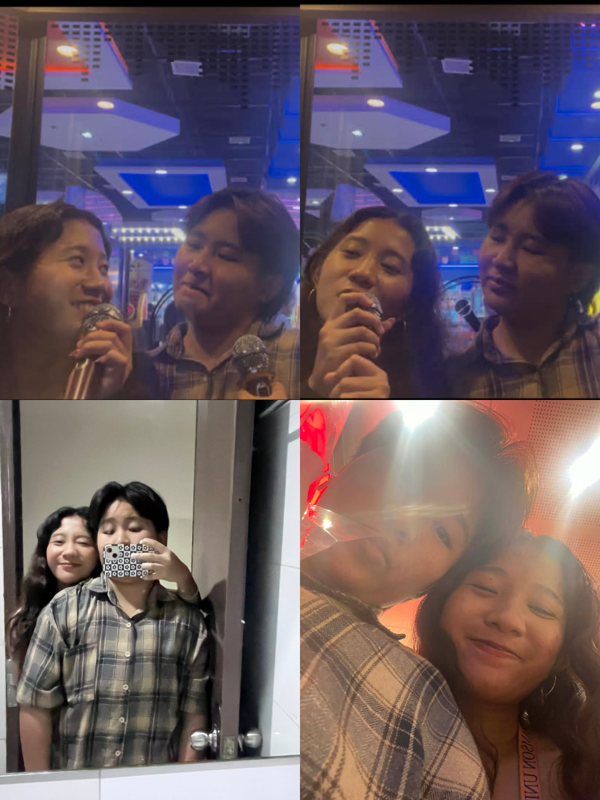
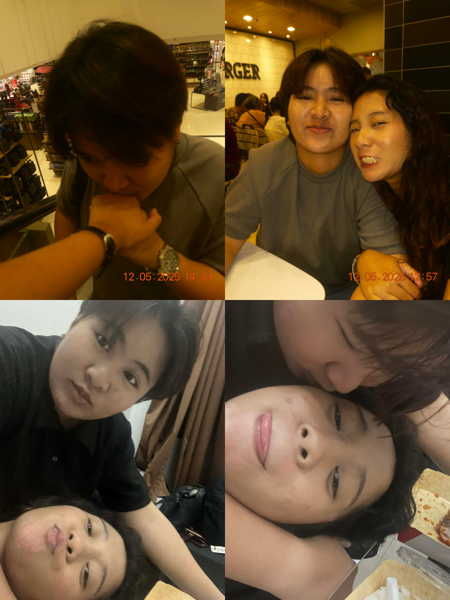
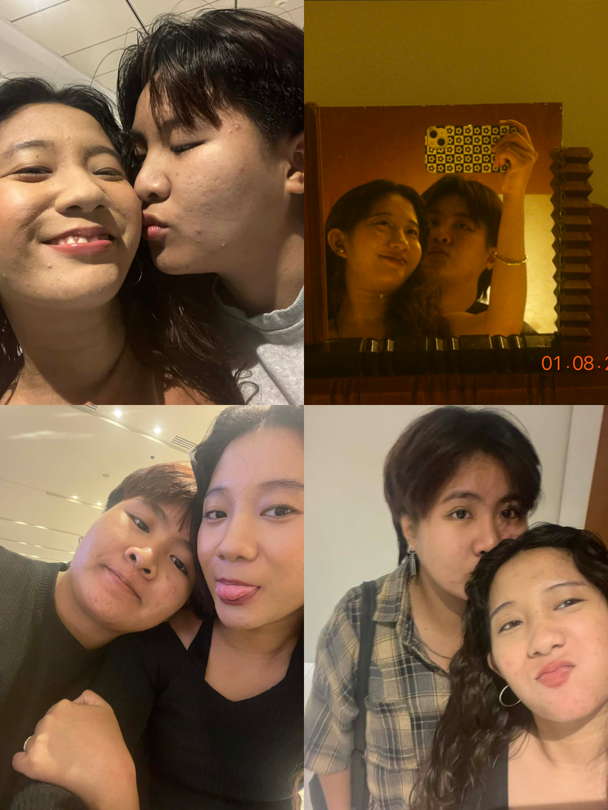
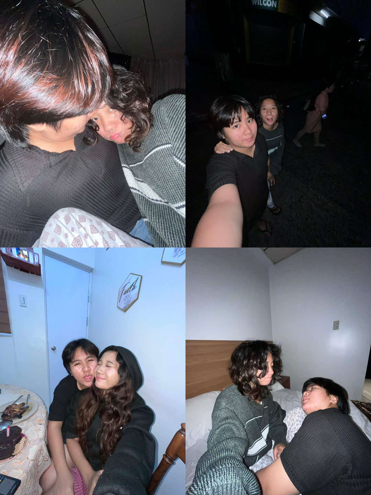

Memories that still feel like home to me.




A space where I can be honest, without pressure.
hiii, kamusta ikaw po?
nakita ko yung sinend mo sa tiktok po. ilang beses ko rin binasa bago ako nag decide na gawin 'to kase hindi ko rin po alam paano sasabihin lahat nang hindi ikaw naguguluhan at nasasaktan po.
natatakot din ako mag message minsan po kahit gustong gusto kitang i-check kasi ayoko pong masira yung space na bini-build mo po para sa sarili mo. ayoko rin pong ma-feel mong pinipilit kita or dinadagdagan ko yung bigat na nafe-feel mo everyday.
pero magiging honest din po ako na natatakot din ako na baka habang tahimik tayo, tuluyan nang mawala lahat ng nararamdaman mo para sakin po. hindi dahil madali lang sayo lahat kundi dahil alam kong napagod ko ikaw at nasaktan nang sobra po.
kaya siguro kahit tahimik ako lately, hindi ibig sabihin non na wala akong ginagawa o nakakalimot na po ako. walang araw na pinili kong kalimutan ka. araw-araw pa rin po kitang iniisip, sa maliliit na bagay, sa routine ko, sa mga oras na sanay akong kausap at kasama ka. pero instead na puro emotion lang ulit mai-show ko sayo, sinusubukan ko pong ayusin yung sarili ko nang paunti-unti. gumagawa lang din po ako ng way para maka-earn and maging mas maayos ako pag nagkita tayo next week at hindi na ko maging yung puro salita lang. gusto ko rin po talagang makita ka at makasama ka ulit kapag kaya ko nang humarap sayo nang mas maayos at mas consistent. don't worry po, no pressure rin po. i'll make sure na wala tayong aayusin or pag uusapan na heavy kapag nagkita tayo. i just want to see you and makasama ka kahit papano. wala rin namang kasiguraduhan ako po kung may nakakausap ka na rin po nyan.
hindi ko po hinihingi na may sagot ka agad o may i-promise ako ngayon. gusto ko lang maging honest na kahit natatakot ako po, willing pa rin akong mag try at mag risk. hindi dahil umaasa ako na magiging okay po lahat, kundi dahil ikaw pa rin yung taong gusto kong piliin sa kahit anong sitwasyon. na ikaw pa rin yung taong gusto kong makita at makasama po palagi.
alam kong maguguluhan ka na naman po, ayoko pong masaktan ikaw, baby :(( hindi ko kayang nasasaktan ka nang ganyan po everyday. kahit hindi kita nakikita po, i'm sad po kapag naiisip ko kung paano ka mag overthink. tanggap ko po yung mga pagkukulang ko at walang valid reason po ron, walang kahit anong "sorry" ang makakabura non.
alam mo po kung anong realization ko sa pagre-reflect ng ilang araw na hindi tayo nag uusap po? na after ng closure na binigay mo po, yes, walking away would be easier po. pero ayoko ng madali kung ang kapalit non ay mawawala ka naman. i'm not here para gawing complicated lahat sayo po ulit, i'm here kase may part sakin na naniniwala pa rin na what we had was real and worth fighting for. i really don't know kung may part pa sayo kahit konti na open pa for me at para kausapin ako pero sana nga po. i mean, no pressure pa rin po, i'm just letting you know na andito ako, no matter what.
kung pwede mo lang ilagay yung sarili mo po sakin, baby. malalaman mo po kung bat hindi kita mabitawan, kung bat after ng lahat mahal na mahal pa rin kita, na pipiliin kitang mahalin nang paulit ulit kahit anong mangyari. at alam ko rin po na kung pwede ko rin mailagay sarili ko sayo, malalaman ko rin kung gaano ka nasasaktan sa mga pagkukulang ko noon pa man. pero you can't stop me from loving you po. hinding hindi kita susukuang mahalin. hindi ko gustong takasan yung mga pagkukulang ko po. gusto ko pong matutunan gawing maayos this time.
hindi ko masabing i've already done my part kase hindi ko pa naman talaga nagagawa lahat. nawala rin ako sa sarili ko netong mga nakaraan and nawala ako nang sobra sa focus sa lahat ng bagay at gagawin ko po lahat para makabangon dito. hindi lang para satin po kundi para sa sarili ko rin. i know you're not into like this set up right now pero gusto kong maging consistent sa pagpunta sayo, sa effort, maging stable unti-unti, at mas present this time.
pero sa kabila ng lahat ng yan po, naiintindihan ko pa rin po yung desisyon mo at rerespetuhin ko yun. hindi ko hinihingi na may sagot ka po o na magbago yung nararamdaman mo. ayoko rin gawing mabigat lahat sayo po. gusto ko lang maging honest sayo, and after this, pipiliin ko rin muna ulit manahimik po para makahinga ikaw nang maayos po. mag iingat ka po palagi, hindi mo kailangang mag reply po omkii? pero andito lang ako kapag need mo me. i love you po.